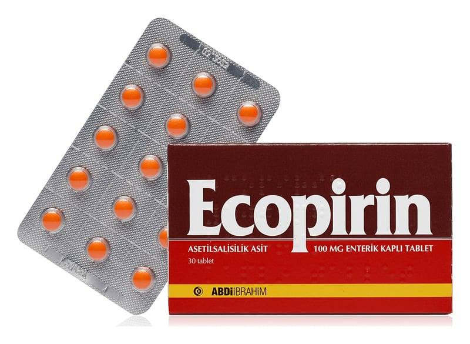

Ecopirin 100 mg Enterik Kaplı Tablet, 30 Adet

Ne için kullanılır
KT · Bölüm 1• ECOPİRİN enterik kaplı tabletlerin her biri 100 mg asetilsalisilik asit adlı etkin madde içerir. Asetilsalisilik asit, trombosit olarak adlandırılan pıhtılaşma hücrelerinin kümeleşmesini önleyerek etkisini gösterir. Bu özelliği nedeniyle çeşitli kalp hastalıklarında kullanılır.
• ECOPİRİN, 30 ve 90 tabletlik ambalajlarda sunulmaktadır. Tabletler turuncu renklidir. Uzun dönemli tedavilerde mide şikayetlerini en aza indirmek üzere enterik kaplı olarak dizayn edilmiştir. Tabletlerin üzerindeki kaplama, ilacın ağız yoluyla uygulanmasından sonra mide yerine bağırsaktan emilmesini sağlar.
• Dinlenirken ortaya çıkan/hareketle ilişkili olmayan göğüs ağrısı (Anstabil anjina pektoris)nda standart tedavinin bir parçası olarak • Ani kalp krizinde (Akut miyokard infarktüsünde) standart tedavinin bir parçası olarak, • Kalp krizinin tekrar etmesinden (reinfarktüs) korunmada, • Kalp ve damar ameliyatları sonrası damar tıkanmaları ve pıhtıların önlenmesinde, • Riskli hasta gruplarında geçici felçlerin ve inmelerin önlenmesinde kullanılır.